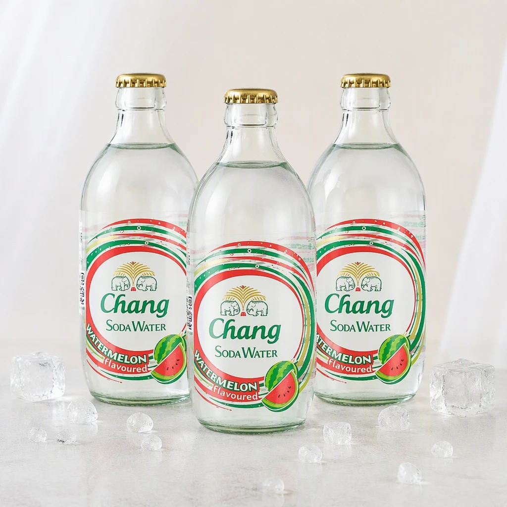

LinkPix 用了大半年，有些当初以为的亮点后来发现根本不是那回事
从第一次装 LinkPix 到现在已经九个月了，从做几张商品图玩玩到后来成了日常工具，中间对它的看法反复变了好几次。说说那些越用越顺手的地方，也说说那些当初没在意后来才发现的糟心点。
开头：当初为什么装它
简单说就是做跨境电商的朋友推了一下。那会儿我正头疼商品图的批量处理，手里一堆从不同供应商拿到的图，尺寸乱、构图歪、还总拍进些桌面杂物。朋友说 LinkPix官网 上介绍它能批量裁剪、能删物体、还能自动翻译图片上的文字，我就抱着试试看的心态从官方下载拿了一份装上了。
坦白讲，第一次打开没抱太大期待。同类的 AI 修图工具这两年冒出来一堆，大多是 demo 级别——演示视频看着惊艳，真上手就各种翻车。但 LinkPix 留下来了，而且一留就是大半年。
越用越顺手的地方
第一个让我改观的是我的创作。刚用的时候没当回事，每次生成完就关窗口，历史堆了一堆也懒得理。直到有一天要重做一批上个月的图，翻了翻历史记录才发现——它不只是存了结果，连当时用的参数、风格方向都记着。点一下批量重做，同方向出新结果，或者直接把参数套到新图上。

这东西用久了才显出价值：我现在做图基本不从头调参数，先去历史里找个差不多的，改几个数值就出活。省的不是调参那两分钟，是不用每次从零开始纠结"这次风格要不要偏亮一点"。
然后是物体移除的保护区域。刚用的时候标记总是把商品主体圈进去，AI 有时候不声不响就给商品补了个莫名其妙的形状。后来发现工具里有保护区域功能——把商品主体涂一遍，AI 就绝不动它。现在处理商品图基本流程是：先框保护区域，再涂要删的杂物，安心等结果。分多次小面积涂比一次大框效果好，这个经验也是跑坏了十几张图才摸索出来的。
还有那个批量裁剪。说真的，10 张图同步锁定选区这件事，听起来没什么技术含量，但真的省时间。以前手动一张一张对齐裁，半小时起步，现在五分钟搞定。三种模式里我最常用自动识别主体，偶尔碰到主体位置特别偏的再切自定义选区。
越用越烦的地方
说个反直觉的——视频字幕翻译是我用得最少但吐槽最多的功能。
当初朋友推的时候重点说了这个：保留原音、自动加字幕、一次生成多语言版本。听起来太适合跨境了。但实际用下来问题不少。
首先是字幕识别准确度。方言或者口音重一点的口播，识别就开始飘。我手头有几条工厂拍的开箱视频，师傅普通话带着浓重的地方口音，生成的字幕有一半是错的。翻译质量倒还行，但源文本错了翻得再对也没用。
然后是时间轴。大部分时候对齐没问题，但一旦口播快了或者中间有停顿，字幕就开始乱跳——要么提前出现三四秒，要么消失晚了跟下一句叠在一起。调的话只能手动拖动，但界面上没有批量微调时间轴的功能，只能一句一句拖，十几分钟的视频能拖一个小时。
最烦的是它会自动清除原字幕。我有一条视频本身已经有英文字幕了，上传去做中文翻译，结果它把原来的字幕清掉了，新生成的中文字幕位置还挡了画面里的产品特写。后来去LinkPix文档翻了一下才知道可以在设置里关掉自动清除，但默认是开的，而且提示藏得很深——第一次踩坑的人基本都要重做一遍。
哪些功能成了每天离不开的，哪些碰都没碰
每天都开的功能：批量裁剪、物体移除、我的创作。这三个已经融入日常了，早上到公司先开 LinkPix 处理完今天要上架的商品图，参数从历史里调，保护区域一涂，批量一跑，十分钟搞定。
视频字幕翻译碰得越来越少了——除非客户明确要求，而且给的是标准普通话口播。上次有个客户要做日语字幕，视频口播是普通话，识别准确了，翻译也没问题，但时间轴调了快半小时，最后客户还是自己找了专门的字幕软件重做了。
还有一个我基本没碰的：AI 生成商品主图。试过几次，但生成出来的图总带着一股 AI 味——光影不自然、材质细节塑料感重，客户那边过不了审。可能我没调对参数，也可能 LinkPix 的强项根本不在生成而在处理。
长期用下来，当初的判断变了什么
第一次用的时候觉得 LinkPix 是个"AI 生成工具"——毕竟官网展示的重点是生成类功能。但大半年用下来，我觉得它更像是个AI 辅助的生产线工具。那些"生成"类的功能我很少用，但"处理"类的——裁剪、移除、翻译、历史管理——已经离不开了。
当初以为它跟市面上其他 AI 修图工具差不多，都是 demo 级别。但现在看来，LinkPix 做得比较用心的地方在于它记得你做过什么。我的创作模块不只是存历史，而是让你能基于历史继续往下走——批量重做、参数复用、版本对比——这些在其他同类工具里很少见。
还有一点是：当初觉得"一次最多 10 张图批量裁剪"太少了。但实际用下来发现 10 张刚好——再多就容易出错，而且 10 张是我一个人能一次性 review 完的数量。不是功能不够，是它帮我控制了批量的粒度。
去留结论
会继续用。每天都要开的东西没理由换。
但有个信号：如果哪天我需要处理大量视频翻译，或者 AI 生成的质量确实提上来了、能过客户的审，那可能会考虑其他专门的工具。目前来看，LinkPix 最适合做"日常商品图处理生产线"，生成类和视频类能应付但不算拔尖。
另外说句题外话——它的更新挺勤快的，几乎每个月都有小改动。上个月物体移除加了个"保守模式"，补全痕迹确实比以前轻。能持续改进的工具，值得继续留着。
这套工具的资料我同步放在了三个仓库——喜欢用 GitHub 的直接去原仓库，国内网络环境想更快加载的可以看Gitee镜像，GitCode 那边也有一份完整同步，选哪个顺手用哪个。